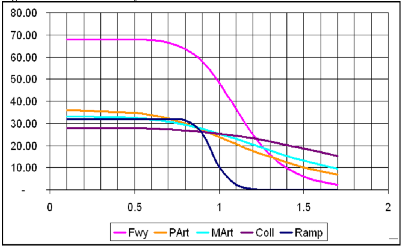

| Version 2.1 | Coef | Exp | Version 3.0 | Coef | Exp |
|---|---|---|---|---|---|
| Freeways/Ramps | 0.88 | 6.5 | Freeways | 0.4 | 8 |
| All else (traditional BPR) | 0.15 | 4.0 | Ramps | 2 | 12 |
| Principals | 0.5 | 4 | |||
| Minors | 0.3 | 4 | |||
| Collectors | 0.1 | 4 |
Highway Assignment
Note: Highway assignment also occurs as a feedback loop in the distribution phase. The pre mode choice assignment in distribution and the post mode choice assignment (final assignment) methods and parameters are consistent, with the exception of trip tables. In distribution, the mode choice split is assumed to be consistent with the 1993 Home Interview Survey, and final assignment accounts for any changes in mode share that are unique to the scenario.
Path impedance function
In Version 2.1, path choice was based on minimizing the following function:
COST= (0.25 * MINUTES + 0.75 * MILES).When time was the only consideration, freeways were loaded much heavier than they should have been. The heavy weighting on distance was to help bring volumes on both freeways and arterials closer to observed counts. Since the units on time and distance are inconsistent, it is difficult to relate these parameters in this way. In Version 3.0, both time and distance are converted to dollar values. Thus the time savings an alternative route offers is valued at $4.00/hour, and the mileage savings the comparable route offers is valued at $0.10/mile. The result is the following cost function:
COST = [(4 dollars/hour)(1hour/60 minutes)(MINUTES) +
(0.10 dollars/mile) * MILES].This reduces to:
COST = (0.067 * MINUTES + 0.10 MILES).When factors are scaled up so as to sum to 1 (as in Version 2.1) the function is:
COST = (0.4 * MINUTES + 0.6 * MILES).Thus Version 3.0 factors can be expressed in dollars, which can facilitate comprehension of the trade-offs between time and distance.
Volume/Delay functions
Version 2.1 volume delay functions were of the standard BPR format:
Congested Time (minutes) = Free flow time * (1 + Coefficient*(V/C)^Exponent) The development of Version 3.0 experimented with Conical and Akcelic functions, but found little significant difference in either curve shapes or assignment results. Thus Version 3.0 continues with BPR format functions. The following compares Version 2.1 to 3.0. The graphic demonstrates the effect of the 3.0 functions. Note that the average speed of ramps drops to 10 mph by V/C = 1. This is to simulate not only the affect of ramp metering, but also the signal delay typically experienced when attempting to enter or leave a freeway ramp.

The improvements to the volume-delay functions resulted in AM model speeds that compare well with observed data and modeled daily volumes that match observed traffic volumes reasonably well.